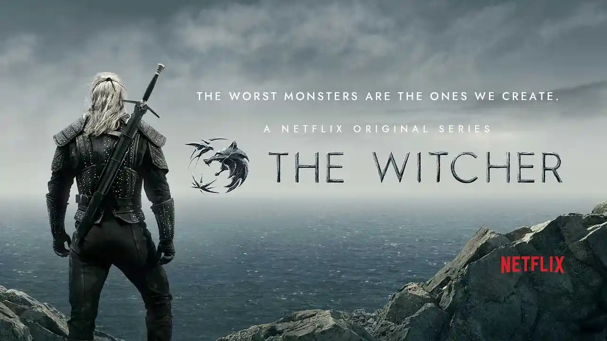
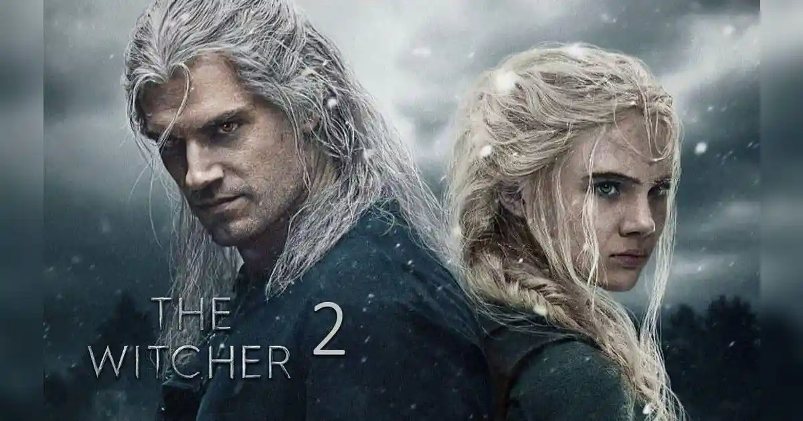
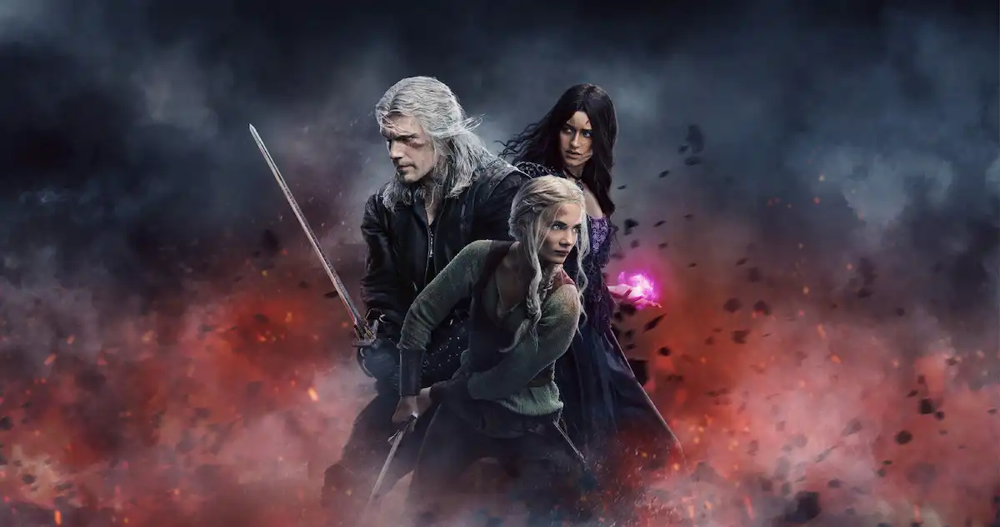
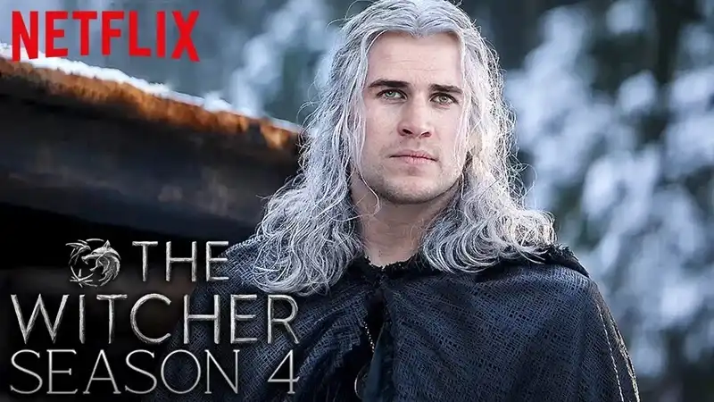

2019Temporada 1
Presenta a Geralt, Yennefer y Ciri mediante relatos que se conectan progresivamente. Incluye adaptaciones de cuentos como el de la striga y conduce a la caída de Cintra.

2019Presenta a Geralt, Yennefer y Ciri mediante relatos que se conectan progresivamente. Incluye adaptaciones de cuentos como el de la striga y conduce a la caída de Cintra.

2021Geralt lleva a Ciri a Kaer Morhen mientras la historia amplía la amenaza de los monstruos y las tensiones políticas del Continente.

2023La familia formada por Geralt, Yennefer y Ciri queda sometida a nuevas presiones políticas y mágicas, culminando en una ruptura que prepara el siguiente arco.

2025 · DisponibleLa cuarta temporada ya está disponible. Liam Hemsworth interpreta a Geralt y Laurence Fishburne se incorpora como Regis. La historia prepara el capítulo final.
Netflix confirmó que las temporadas 4 y 5 fueron planteadas para llevar la adaptación de los libros restantes hasta su conclusión.
Miniserie ambientada mucho antes de la historia principal, centrada en los acontecimientos que rodean a los primeros brujos y la Conjunción de las Esferas.
La serie de Netflix tiene una relación distinta con el material que los juegos. Mientras CD Projekt Red inventa historias posteriores a la saga literaria, Netflix adapta directamente los cuentos y novelas.
La primera temporada utiliza una estructura temporal que puede resultar confusa al principio, pero sirve para reunir las historias de los tres protagonistas. A partir de la segunda temporada, la narración se vuelve más lineal.
La adaptación también modifica personajes, acontecimientos y relaciones. Por eso conviene evitar medir cada decisión únicamente por fidelidad: funciona como una interpretación audiovisual independiente.
El cambio de Geralt entre temporadas 3 y 4 es el caso más visible de diferencia respecto de los juegos, donde el personaje mantiene una identidad visual y vocal consistente dentro de la trilogía.
Con la temporada 4 ya disponible y la quinta planteada como cierre, la serie entra en su etapa final. El objetivo declarado por Netflix es completar la adaptación de los libros restantes.
Así, juegos y serie pueden disfrutarse como dos puertas de entrada diferentes al mismo Continente: una interactiva y posterior a los libros; la otra audiovisual y basada en la saga literaria.